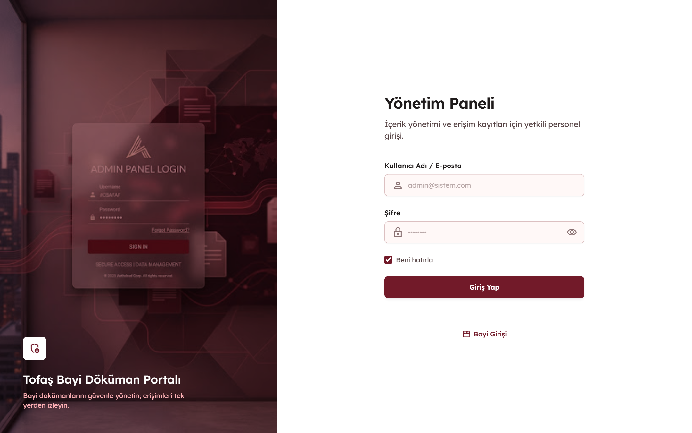
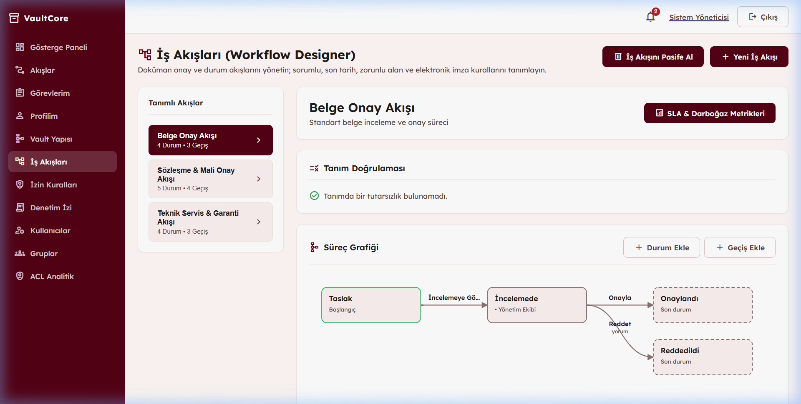
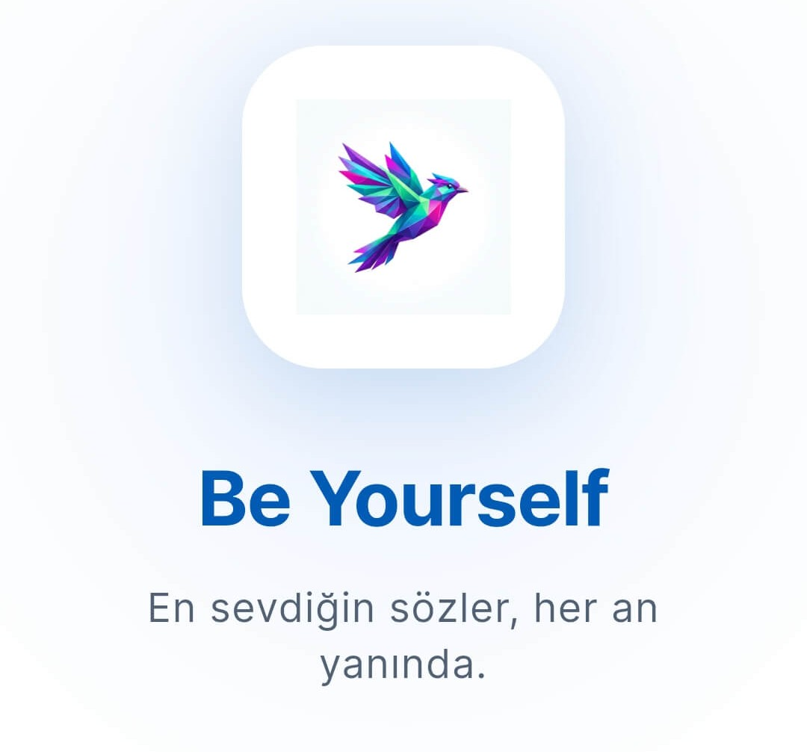
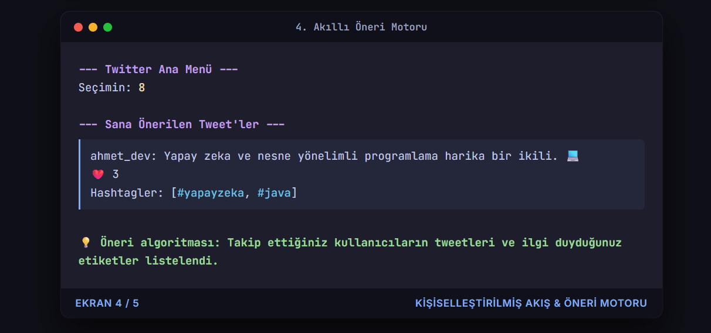

Ölçeklenebilir, Dayanıklı & Yüksek Performanslı Yazılımlar.
.NET 9 & ASP.NET Core, Angular 20 Standalone, Clean Architecture, PostgreSQL ve Docker ile kurumsal seviyede güvenli, modüler ve dağıtık sistemler inşa ediyorum.
Backend & Kurumsal Mimari
Clean Architecture, Modüler Monolit ve DDD prensipleriyle güvenli, ölçeklenebilir kurumsal sistem tasarımı.
Modern Web Frontend
Standalone bileşenler ve reaktif sinyaller (Signals) kullanarak dinamik kullanıcı arayüzleri.
Veri Tabanı & Altyapı
İlişkisel modelleme, tam metin arama optimizasyonları ve CAS (İçerik-Adresli) depolama.
DevOps, Test & Araçlar
Konteynerizasyon, CI/CD, otomatik test altyapıları ve API belgelendirme standartları.
Yapay Zeka & Görüntü İşleme
Bilgisayarlı görü, göz takibi (eye-tracking), OCR ve makine öğrenmesi algoritmaları.
Mobil Geliştirme
Modern mobil teknolojiler kullanarak iOS ve Android platformları için çapraz platform çözümler.
Öne Çıkan Kurumsal & Modern Projeler
Gerçek iş problemlerini çözen, ölçeklenebilir mimarilerle geliştirilmiş seçilmiş projeler.

Kurumsal Bayi Doküman Yönetim Portalı
Yetkili bayilerin kurumsal dokümanlara tek merkezden erişmesini sağlayan; Modular Monolith, Clean Architecture, JWT & Role-Based Authorization ve marka bazlı yetkilendirme mimarili web portalı.

VaultCore — Metadata Doküman Yönetimi & İş Akışı
M-Files mimarisinden esinlenen; dinamik şema modelleme, materyalize ACL güvenlik motoru, durum makineli iş akışı otomasyonu, check-out versiyonlama ve OCR destekli FTS sunan kurumsal DMS platformu.

BeYourself — Kişisel İlham & Medya Asistanı
Instagram Reels/Carousel medya ayrıştırıcı, Vercel Serverless CORS proxy, Android Home Widget, zamanlanmış yerel bildirimler ve Supabase bulut senkronizasyonlu modern Flutter uygulaması.

Not Hesaplama & Akademik Başarı Aracı
Vize, ödev ağırlıkları ve geçme notu hedeflerine göre final sınavında alınması gereken minimum notu anlık hesaplayan, dinamik toleranslı C# WinForms masaüstü aracı.

Memory Match — 2D Kart Eşleştirme Oyunu
C++ ve SFML kütüphanesi ile geliştirilmiş; struct, 2D Array, Queue ve Map veri yapıları kullanılarak bellek yönetimi ve kullanıcı etkileşimi sağlanan 4x4 hafıza oyunu.

Mini Twitter — Terminal Tabanlı Sosyal Medya
Java 17 ve OOP prensipleri ile geliştirilmiş; kullanıcı oturum yönetimi, tweet paylaşımı, hashtag etiketleme, takip mekanizması ve kişiselleştirilmiş öneri motoru sunan konsol uygulaması.
Problem Çözmek, Sistem Kurmak, Öğrenmeye Devam Etmek.
Bilgisayar Mühendisliği öğrencisi olarak yazılım geliştirmeyi yalnızca kod yazmak olarak değil, gerçek problemlere sürdürülebilir çözümler üretmek olarak görüyorum. Backend geliştirme, yapay zeka entegreli sistemler alanlarında kendimi geliştirirken; temiz, anlaşılabilir ve ölçeklenebilir sistemler tasarlamaya odaklanıyorum.
C#, Java ve Python ile çalışıyor; ASP.NET Core, veritabanları, REST API'ler ve modern yazılım mimarileri üzerine deneyim kazanıyorum. Aynı zamanda yapay zeka entegreli sistemler alanında ilerleyerek yazılım mühendisliği altyapımı AI ile birleştirmeyi hedefliyorum.
Öğrenmeyi projeler üzerinden seviyorum. Üniversite çalışmalarından gerçek dünya staj deneyimine, TÜBİTAK araştırmalarından kişisel projelere kadar her çalışmayı kendimi bir adım ileri taşımak için kullanıyorum.
Bilgisayar Mühendisliği 3.Sınıf Öğrencisi
Yazılım Geliştirme • Yapay Zeka Entegreli Sistemler • Full-Stack Web ve Masaüstü Uygulamaları
TOFAŞ'taki staj sürecimde kurumsal bir ortamda gerçek bir yazılım projesinin geliştirme sürecini deneyimledim. Backend geliştirme, API'ler, veritabanı, doküman yönetimi ve ekip içi yazılım geliştirme süreçleri hakkında pratik deneyim kazandım.
Bilgisayar Mühendisliği 2.Sınıf Öğrencisi
TÜBİTAK 2209A Araştırma Projesi • Kulüp Etkinlikleri
- TÜBİTAK 2209-A: Nöropazarlamada Cinsiyet Temelli Dikkat Modelleri: Webcam Tabanlı Eye-Tracking ve Makine Öğrenmesi Yaklaşımı
- Bilişim Zirvesi'25: Yapay zeka, siber güvenlik, blokzincir ve girişimcilik alanlarını bir araya getiren etkinliğin organizasyonunda görev aldım.
- YAZAKİ Teknik Gezisi: Otomotiv sektöründeki üretim ve teknoloji süreçlerini yerinde gözlemleme fırsatı buldum.
- SQL Server 2025 Workshop: SQL Server 2025 ve modern veritabanı teknolojileri üzerine uygulamalı bir workshop'a katıldım.
- GDG Bursa DevFest: Yapay zeka, Google teknolojileri ve modern yazılım geliştirme üzerine teknik oturumlara katıldım.
- StartTech'25: Teknoloji ve girişimcilik odaklı StartTech'25 etkinliğine kulübümüzü temsilen katıldım.
Bilgisayar Mühendisliği 1.Sınıf Öğrencisi
Kariyer Fuarı Deneyimi • Etkinlik Organizasyonu
- Kariyer Fuarı: Kocaeli Üniversitesi kariyer fuarına katılarak hem sektörü yakından tanıma hem de staj imkanlarını değerlendirme fırsatı buldum. Etkinlik boyunca NETWORK ve teknoloji alanındaki güncel yaklaşımları dinledim ve çeşitli şirketlerin staj programları hakkında bilgi edindim.
- Bilişim Zirvesi'24: Yapay zeka, siber güvenlik, blokzincir ve girişimcilik alanlarını bir araya getiren etkinliğin organizasyonunda görev aldım.
Birlikte Harika Projeler Geliştirelim
Kurumsal projeler, mimari danışmanlık veya teknoloji iş birlikleri için bana dilediğiniz zaman ulaşabilirsiniz.